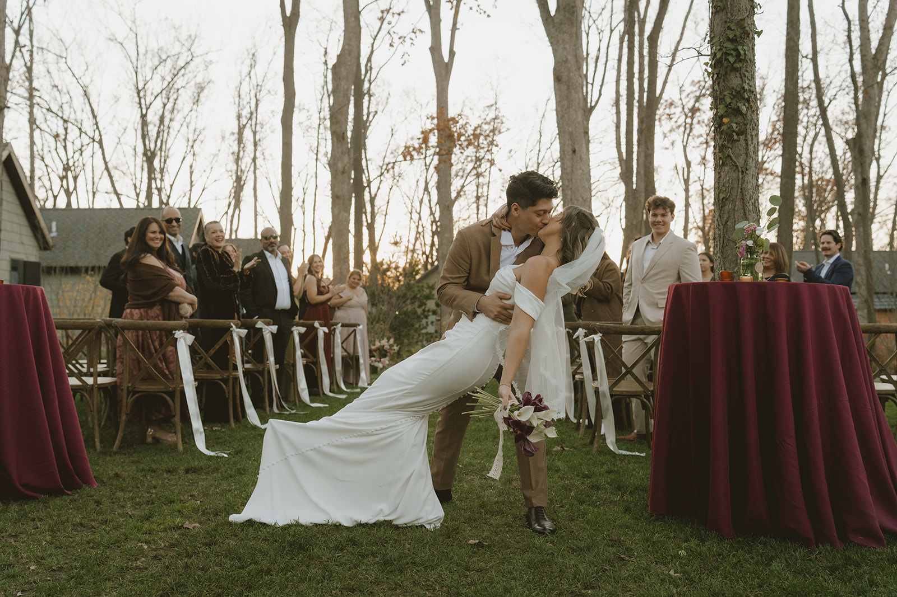
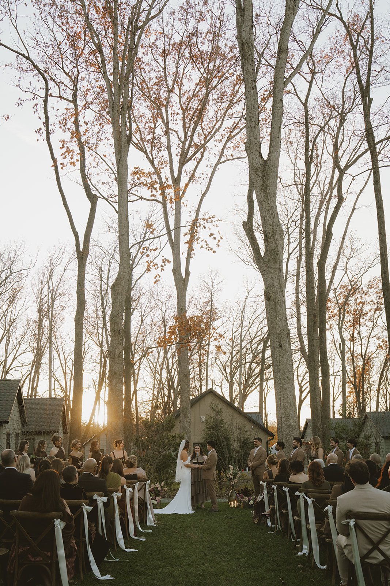
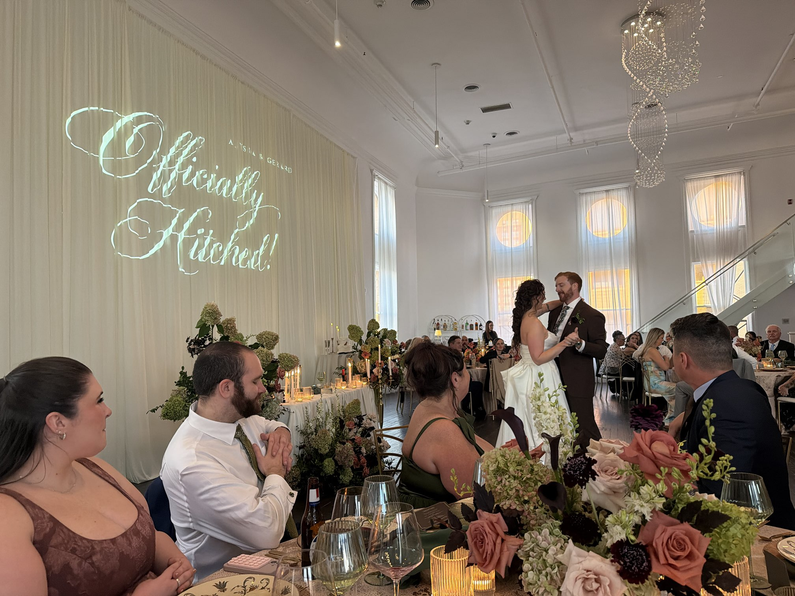
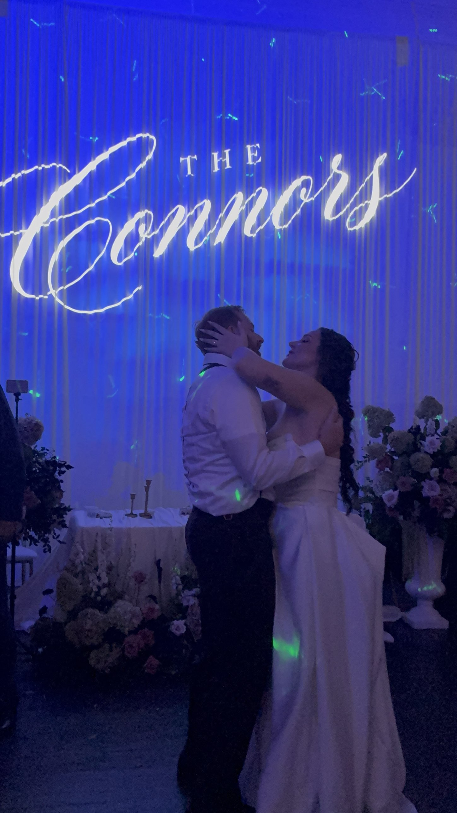
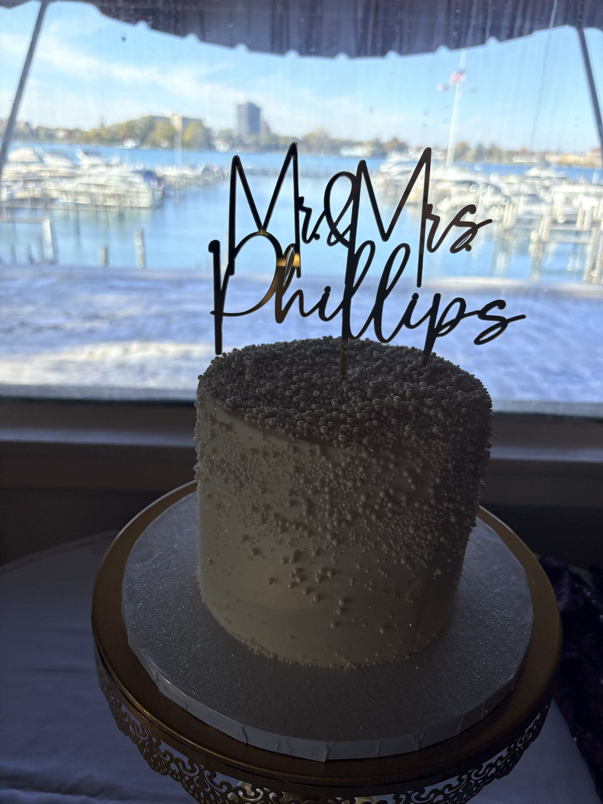
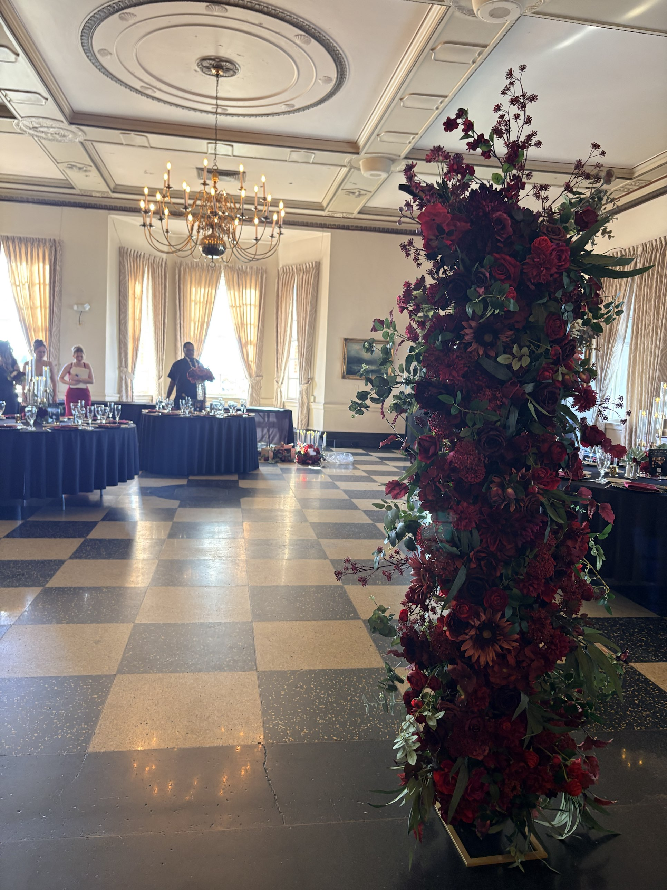
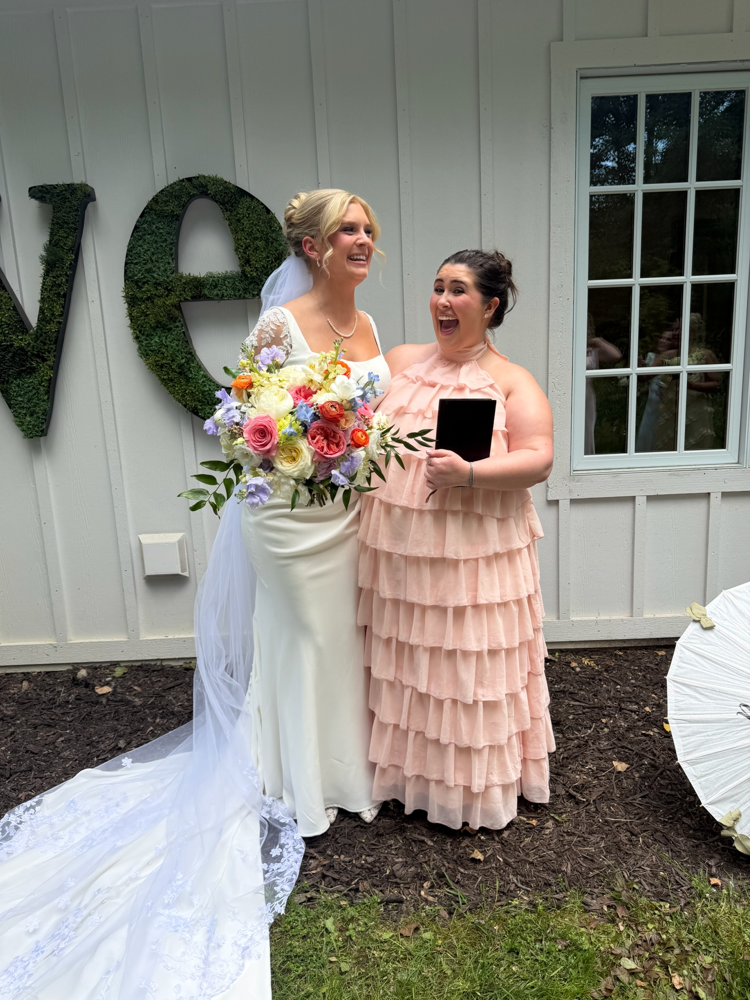
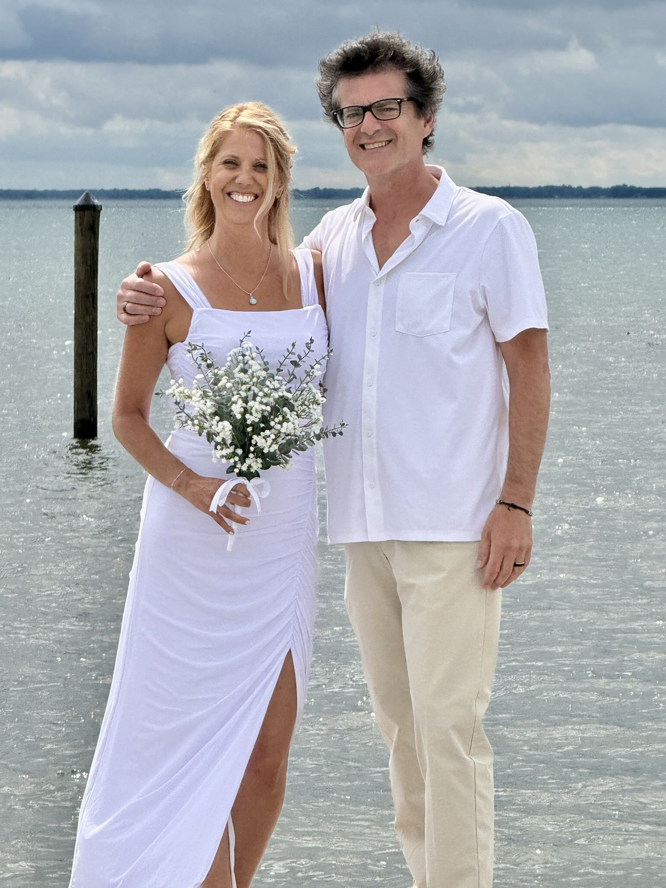
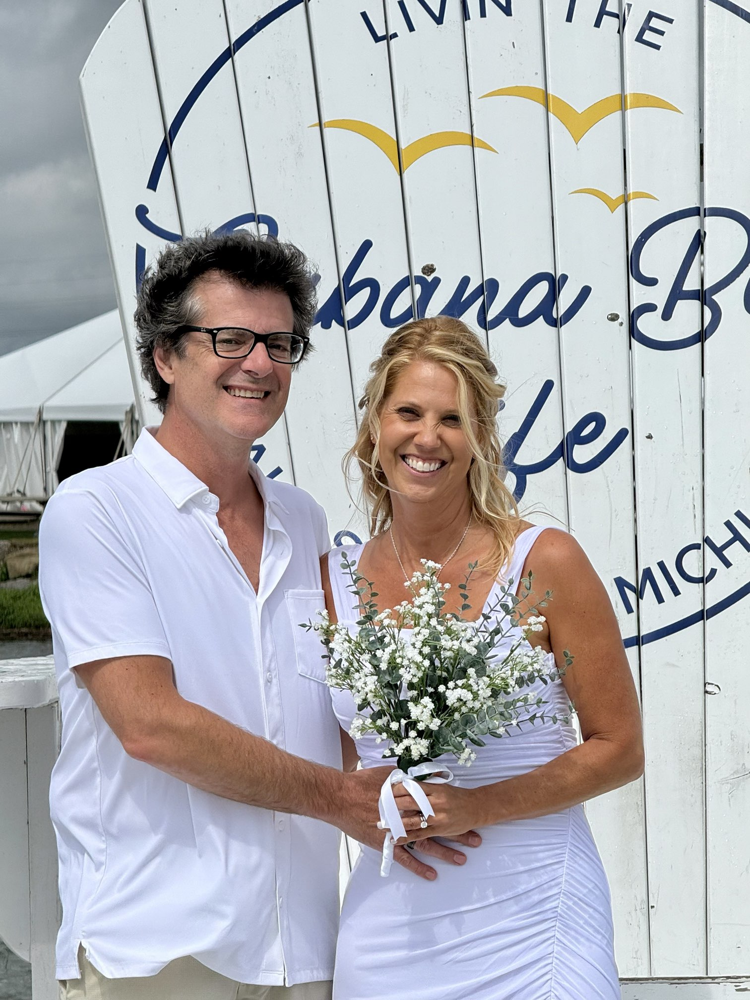

start here
Hi, I’m Marisa
Ordained minister, officiant and ceremony writer in Metro Detroit.
Storyteller first. Story is the signature.
start here
Ordained minister, officiant and ceremony writer in Metro Detroit.
Storyteller first. Story is the signature.
how I can help
a little about me
Modern, not stuffy. Traditions are history, and you get to make them yours.
let’s talk
I officiate around Metro Detroit. Scripts and coaching happen anywhere in the U.S.
idobymarisa.com
ceremonies
Never a template. Every word is yours.
how it works
friend officiating?
for the friend who said yes
One-on-one officiant coaching: pacing, nerves, the mic and the big moments.
By phone or Google Meet, wherever the wedding is.
vows
Vow help for when you know what you feel but not how to say it.
vow tip
Skip the big feelings. Write about a normal Tuesday: how they make your coffee, the song they hum doing the dishes.
vow tip
If you trip over a line, so will your nerves. Shorter sentences, more breaths.
stuck?
Send me a DM, or ask in the question box below.
kind words
Tap through ♡
kind words
— Gabrielle & Darian
kind words
— Heather & Brandon
kind words
— Nick & Hannah
kind words
— Nick
kind words
— Catherine
married by me?
It means the world, and it helps the next couple find me.
link below ↓
my couples
Tap through ♡

a fall evening, and the dip of the year
📸 @gabriellecynthiaphoto

Petite Acres
📸 @gabriellecynthiaphoto

first dance, Castle Hall

their ceremony had a ring warming ♡

Detroit Yacht Club

the aisle, before the guests

Cushing Field House

a lakeside elopement

small, sweet and all heart
your turn
idobymarisa.com
rain on your wedding day?
They say a wet knot is harder to untie. So, good luck.
a little about me
Some people think it’s gloomy. I think it’s beautiful and calming. Umbrella photos? Iconic.
rain plan
faq
Tap through for the ones I get the most.
are you ordained?
I’m an ordained minister, and I officiate around Metro Detroit.
how far ahead?
For a script, reach out at least 3 weeks before the wedding. For me to officiate, the sooner the better.
outside Michigan?
Scripts and officiant coaching happen anywhere in the U.S. I officiate in person around Metro Detroit.
do we have to be traditional?
Traditions are history. We keep the ones you love and make them yours.
the shop
little freebies
Vow Starter · Who Does What? · The Promise Prompt · Officiant Binder Cover
shop now
idobymarisa.com/the-shop